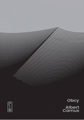
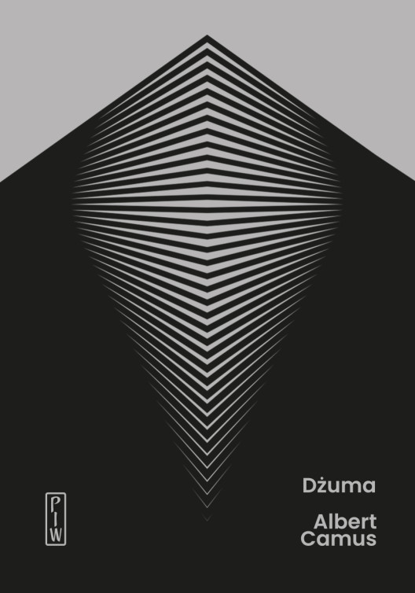
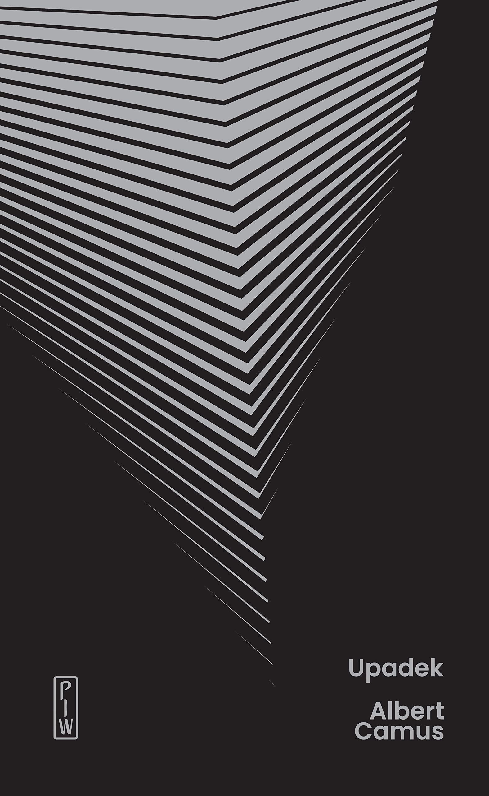

Człowiek zbuntowany
Francuski pisarz, dramaturg i filozof, laureat Nagrody Nobla. Twórca absurdyzmu – nurtu zakładającego, że ludzka potrzeba szukania sensu zderza się z głuchym milczeniem wszechświata. Zamiast jednak popadać w rozpacz, Camus proponuje bunt: akceptację braku sensu i czerpanie z życia radości na przekór losowi.


